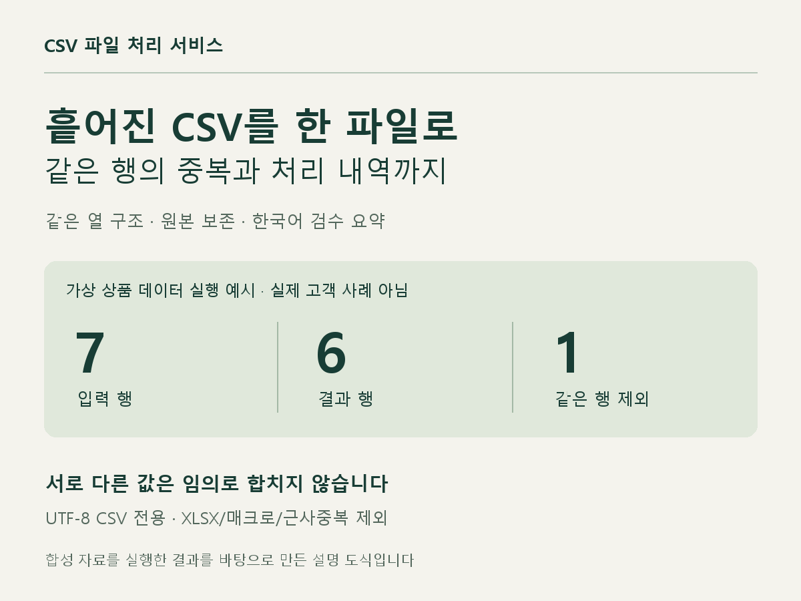

정리된 결과 CSV
여러 파일을 합치고 선택한 규칙에 따라 전체 행이 동일한 중복을 제외하거나 모든 행을 유지합니다.
한 번만 필요한 파일 작업 / 정액 안내
상품·재고·주문 내역처럼 열 구조가 같은 CSV를 합치고, 완전히 동일한 행의 중복을 정리합니다. 처리 과정과 결과를 함께 전달하므로 무엇이 달라졌는지 확인할 수 있습니다.
처음에는 실제 개인정보 대신 가상 예시만 보내 주세요. 문의는 공개 GitHub 이슈이며 GitHub 로그인이 필요합니다.

서비스 설명용 도식 · 실제 고객 납품 사례 아님사전 범위·결제 조건 합의 후 진행
합계 5,000행 · 20열 · 2MiB 이하
자료 확인·결제 후 일정 확정
최초 합의 범위 내 요청
무엇을 제공하나요?
가상 파일로 이미 검증한 작업 방식입니다. 실제 의뢰는 입력 파일의 형식과 처리 규칙을 확인한 후 수락합니다.
여러 파일을 합치고 선택한 규칙에 따라 전체 행이 동일한 중복을 제외하거나 모든 행을 유지합니다.
입력/출력 건수, 처리 규칙, 제외 및 변경 내용을 재확인할 수 있도록 JSON 검수 기록을 포함합니다.
처리된 결과와 데이터 한계, 확인해야 할 부분, 식별자 열의 앞자리 0 보존 방법을 안내합니다.
실제 기능 기반 / 가상 예시
원본을 덮어쓰거나 같은 주문번호라는 이유만으로 서로 다른 행을 없애지 않습니다. 데이터가 달라지면 임의로 판단하지 않고 확인합니다.
무료 CSV 중복 검사기를 사용해 보기 ↗catalog-a.csv + catalog-b.csv
│
▼
파일 구조 / 열 개수 확인
전체 행 일치 기준 중복 정리
│
▼
merged.csv ← 결과 파일
rules.json ← 적용 규칙
audit.json ← 검수 기록
summary.txt ← 한국어 안내실제 고객 작업 기록·거래 실적이 아닌 구성 설명입니다.
정확한 범위가 중요합니다
Excel XLSX 통합문서 처리, 매크로·수식 작성, 서로 다른 열 구조 매핑
이미지·PDF OCR, 유사한 이름 추측 병합, 누락 정보를 임의 생성하는 작업
웹사이트 크롤링, 외부 API 연동, 고객 시스템에 업로드 및 최종 가져오기 검증
주소·전화번호 유효성 확인, 개인정보 처리 승인 없이 민감 데이터 작업
파일은 UTF-8 쉼표 구분 CSV만 접수합니다. 원본 파일은 보존하고 별도의 결과 파일을 만듭니다. 안전한 내보내기를 위해 수식처럼 보이는 셀은 값에 접두문자가 붙을 수 있으므로 사전에 안내합니다. 실제 고객 자료를 외부 AI API에 업로드하지 않는 방식으로 작업합니다.
진행 방식
파일 수, 합계 행·열 수, 열 제목, 원하는 중복 기준을 가상 예시로 알려 주세요.
기본 패키지에 맞는지 확인하고 정확한 작업과 가격·납기·결제 방식을 별도로 합의합니다.
합의 후 정리된 CSV, 적용 규칙, 검수 기록, 한국어 요약을 전달합니다. 범위 내 수정 1회를 포함합니다.
문의 자체는 무료
파일 구조와 원하는 결과부터 확인해 드립니다. 범위에 맞지 않거나 수락할 수 없는 작업은 결제 전에 안내합니다.
이 페이지는 구매 결제창이 아니라 작업 범위 안내입니다. 정식 주문·결제는 별도 조건 합의 후 진행되며, 합의 전에는 비용이 발생하지 않습니다. 단순 고객 문의로 처리 가능 여부를 보장하지 않습니다. 수정 횟수는 법령 및 합의에 따른 하자 처리·환불 권리를 제한하지 않습니다.
자주 묻는 질문
아니요. 기본 패키지는 전체 열의 값이 같은 행을 중복으로 판단합니다. 주문번호가 같더라도 다른 항목이 있으면 임의 삭제하지 않습니다.
이 정액 서비스는 UTF-8 CSV 전용입니다. 엑셀에서 CSV UTF-8로 저장한 파일로 가능 여부를 확인할 수 있습니다. 별도 Excel 자동화는 맞춤 문의가 필요합니다.
아니요. 먼저 가상 예제 5행과 열 제목, 파일 수만 알려주세요. 공개 GitHub 이슈에 개인정보·사내자료·결제정보를 올리면 안 됩니다.
아직 직접 결제 버튼은 제공하지 않습니다. 작업 가능 여부와 일정을 확인하고 결제 방식 및 조건을 합의한 뒤 진행합니다. 요청서 접수만으로 계약이 체결되지는 않습니다.